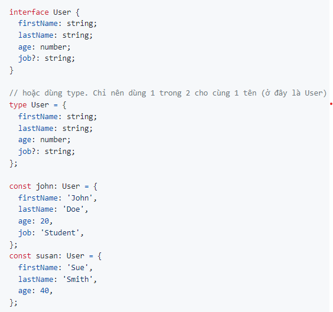
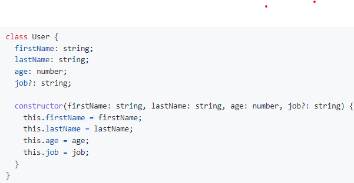
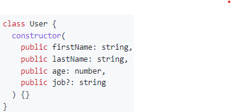
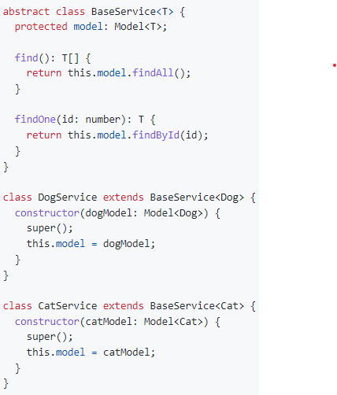
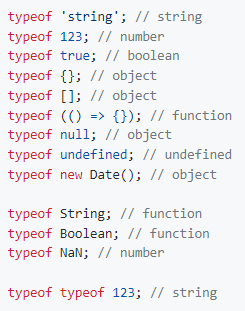
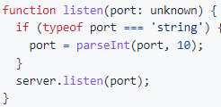

type-script-data-type works!

Lý thuyết
- TS cung cấp Static Types
- JS là một ngôn ngữ mang tính chất Dynamic lên JS rất thoải mái
+ let john = 'John';
+ john = 123;
+ biến john được khởi tạo là 1 chuỗi, sau đó lại được gán cho 1 số 123
+ Nhìn qua thì có vẻ thoải mái, nhưng rất dễ dẫn đến những lỗi ngớ ngẩn khi phát triển phần mềm
- Với TS, TS trước tiên sẽ tự cung cấp type cho biến john
- một primitive type là string vì giá trị "John" là dạng chuỗi (string)
- Khi giá trị 123 được gán cho biến john thì TS sẽ bắt lỗi tại thời điểm code được compile (Compilation Time Error) vì 123 (number) thì không thể gán cho 1 biến có type là string được.
default types trong TS
- let someString: string;
- let someNumber: number;
- let someBoolean: boolean;
- let something: any; // có thể gán sang cho bất kỳ kiểu dữ liệu nào khác
- let someStringArray: string[]; // tương tự cho number[], boolean[], any[]
- let someObject: object;
- let someNull: null;
- let someUndefined: undefined;
- let someUnknown: unknown;
- let someNever: never; // ví dụ như một hàm throw exception
- let someTuple: [string, number];
- let someVoidFunction: () => void; // một hàm không trả về giá trị gì sau khi thực thi
- let someFunction: () => string; // một hàm trả về giá trị có type "string" sau khi thực thi
Interface/Type
- cung cấp Interface và Type để định nghĩa được type cho một đối tượng (object)

- interface giống như một cái khuôn bánh, muốn bánh của mình có hình dạng như thế nào thì chúng ta sẽ sử dụng cái khuôn có hình dạng như vậy
- job?: string: là Optional Property. job là một property không-bắt-buộc, nghĩa là có cũng được, không có cũng không sao
- interface sẽ giúp text editor gợi ý cho object có những properties gì trên object đó
- giảm thiểu việc sai lỗi chính tả khi viết code
Class
- class là cú pháp xuất hiện trong ES2015 hay ES6
- Trong JS, class thực chất chỉ là syntactic sugar cho Prototypal Inheritance

Access Modifier
- keywords như: public, private, và protected

Generics
- giúp viết code theo hướng Abstraction dễ dàng hơn, theo sát hơn SOLID Principles (SOLID)

- Cú pháp '<'T'>' chính là Generics, hay còn gọi là Type Parameter.
typeof
- typeof là 1 operator dùng để lấy về type của 1 biến.

Union Type

- muốn type nào đó mà chúng ta chưa biết (unknown) tại thời điểm viết code.
- có thể nhận: string, number, boolean, array, object, và function (kể cả undefined và null)
- unknown là type được giới thiệu trong TS 3.0. TS khuyến cáo sử dụng unknown thay vì any
- bất cứ giá trị nào cũng có thể gán được cho unknown >> lên hạn chết dùng unknown
- type or: string | number >> cho tham số hoặc giá trị trả về của hàm
Intersection Type
- muốn type nào đó mà chúng ta chưa biết (unknown) tại thời điểm viết code.
- có thể nhận: string, number, boolean, array, object, và function (kể cả undefined và null)
- unknown là type được giới thiệu trong TS 3.0. TS khuyến cáo sử dụng unknown thay vì any
- bất cứ giá trị nào cũng có thể gán được cho unknown >> lên hạn chết dùng unknown
- type or: string | number >> cho tham số hoặc giá trị trả về của hàm